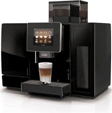

Espressor Super-Automat
Espresoarele super-automate fac totul automat: măcinare, dozare și extracție. Sunt excelente pentru cei care doresc confort maxim.
Avantaje:
- Automatizare completă.
- Gama variată de băuturi.
- Foarte ușor de utilizat.
Dezavantaje:
- Preț foarte ridicat.
- Opțiuni limitate pentru personalizare.
- Pot fi voluminoase.